МАСЛЯНЫЙ НАСОС > СНЯТИЕ |
| 1. СНИМИТЕ ДВИГАТЕЛЬ В СБОРЕ |
Снимите двигатель в сборе (Нажмите здесь).
| 2. СНИМИТЕ КОМПЛЕКТ КЛАПАНА СИСТЕМЫ СНИЖЕНИЯ ТОКСИЧНОСТИ ОТРАБОТАВШИХ ГАЗОВ (для моделей со вспомогательной системой подачи воздуха в нейтрализатор) |
| 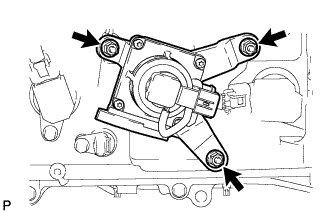 |
Отверните 3 гайки и снимите комплект клапана системы снижения токсичности отработавших газов.
| 3. СНИМИТЕ КОМПЛЕКТ КЛАПАНА СИСТЕМЫ СНИЖЕНИЯ ТОКСИЧНОСТИ ОТРАБОТАВШИХ ГАЗОВ № 2 (для моделей со вспомогательной системой подачи воздуха в нейтрализатор) |
| 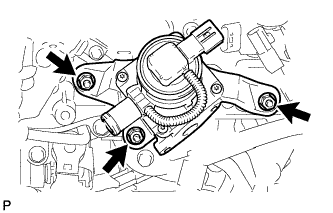 |
Отверните 3 гайки и снимите комплект клапана системы снижения токсичности отработавших газов № 2.
| 4. СНИМИТЕ КАТУШКУ ЗАЖИГАНИЯ В СБОРЕ |
| 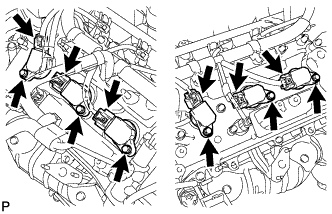 |
Отсоедините разъемы 6 катушек зажигания.
Выверните 6 болтов и снимите 6 катушек зажигания.
| 5. СНИМИТЕ ТРУБКУ ЩУПА ПРОВЕРКИ УРОВНЯ МАСЛА |
| 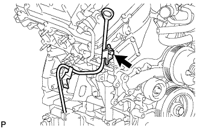 |
Снимите щуп проверки уровня масла.
Выверните болт и снимите трубку щупа проверки уровня масла.
Снимите кольцевое уплотнение с трубки щупа.
| 6. СНИМИТЕ ПЕРЕПУСКНОЙ ПАТРУБОК ОХЛАЖДАЮЩЕЙ ЖИДКОСТИ В СБОРЕ (для моделей с масляным радиатором) |
| 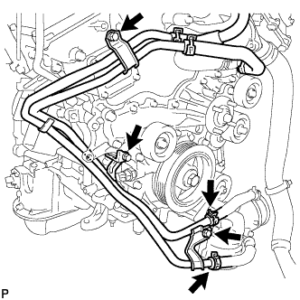 |
Отсоедините 2 патрубка.
Выверните 3 болта и снимите перепускную трубку охлаждающей жидкости.
| 7. СНИМИТЕ КОЖУХ ВПУСКНОГО ПАТРУБКА ОХЛАЖДАЮЩЕЙ ЖИДКОСТИ |
| 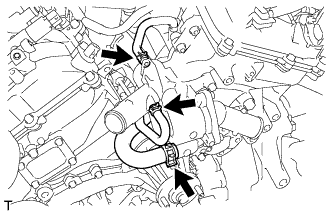 |
Отсоедините 3 перепускных шланга охлаждающей жидкости.
| 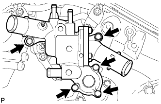 |
Выверните 5 болтов и снимите кожух впускного патрубка охлаждающей жидкости.
| 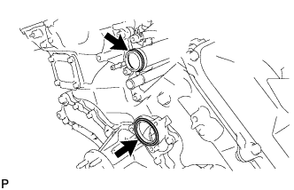 |
Снимите кольцевое уплотнение и прокладку с отводящей трубки системы охлаждения и насоса системы охлаждения.
| 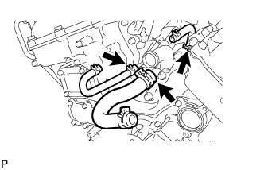 |
Подсоедините 3 перепускных шланга охлаждающей жидкости.
| 8. СНИМИТЕ ОПОРНЫЙ РОЛИК № 1 В СБОРЕ |
| 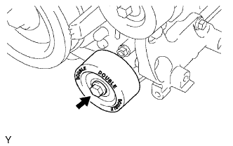 |
Выверните болт и снимите опорный ролик № 1.
| 9. СНИМИТЕ ОПОРНЫЙ РОЛИК № 2 В СБОРЕ |
| 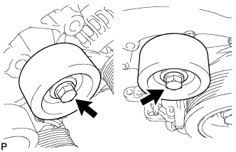 |
Для сидений со съемной обивкой:
Выверните 2 болта и снимите 2 крышки опорных роликов, 2 опорных ролика № 2 и 2 крышки опорных роликов № 2.
Для сидений с несъемной обивкой:
Выверните 2 болта и снимите 2 опорных ролика № 2.
| 10. СНИМИТЕ НАТЯЖИТЕЛЬ ПОЛИКЛИНОВОГО РЕМНЯ В СБОРЕ |
| 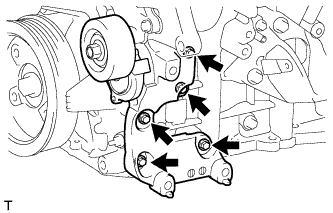 |
Выверните 5 болтов и снимите натяжитель поликлинового ремня.
| 11. СНИМИТЕ КРОНШТЕЙН МАСЛЯНОГО ФИЛЬТРА |
| 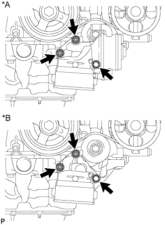 |
Отверните 2 гайки, выверните болт и снимите кронштейн масляного фильтра с прокладкой.
| *A | Для моделей с масляным радиатором |
| *B | Для моделей без масляного радиатора |
| 12. СНИМИТЕ ШКИВ КОЛЕНЧАТОГО ВАЛА |
| 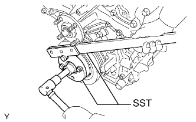 |
Используя SST, зафиксируйте шкив коленчатого вала и ослабьте болт шкива. Дополнительно ослабьте болт, чтобы он был ввернут в коленчатый вал на 2 - 3 витка резьбы.
| 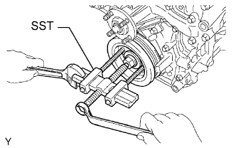 |
С помощью установочного болта шкива и SST снимите шкив коленчатого вала и выверните болт шкива.
| 13. СНИМИТЕ МАСЛОПРОВОД № 1 |
| 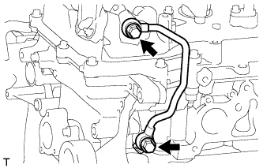 |
Снимите 2 штуцера маслопровода, левый фильтр гидравлического клапана изменения фаз, 3 прокладки и маслопровод № 1.
| 14. СНИМИТЕ МАСЛОПРОВОД № 2 |
| 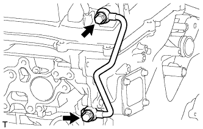 |
Снимите 2 штуцера маслопровода, правый фильтр гидравлического клапана изменения фаз, 3 прокладки и маслопровод № 2.
| 15. СНИМИТЕ ЗАДНЮЮ КРЫШКУ ГОЛОВКИ БЛОКА ЦИЛИНДРОВ |
| 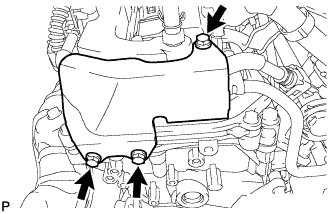 |
Выверните 3 болта и снимите крышку.
| 16. ОТСОЕДИНИТЕ ТОПЛИВОПРОВОД |
Выверните 2 болта и отсоедините топливопровод.
| 17. СНИМИТЕ ЛЕВУЮ КРЫШКУ ГОЛОВКИ БЛОКА ЦИЛИНДРОВ В СБОРЕ |
| 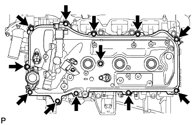 |
Выверните 12 болтов и снимите уплотнительную шайбу, крышку головки блока цилиндров и прокладку.
| 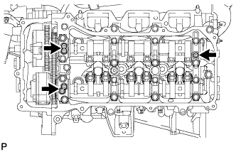 |
Снимите 3 прокладки.
| 18. СНИМИТЕ КРЫШКУ ГОЛОВКИ БЛОКА ЦИЛИНДРОВ В СБОРЕ |
| 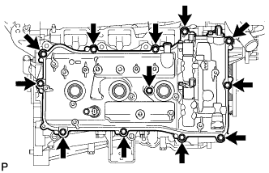 |
Выверните 12 болтов и снимите уплотнительную шайбу, крышку головки блока цилиндров и прокладку.
| 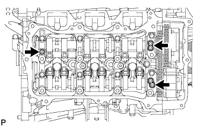 |
Снимите 3 прокладки.
| 19. СНИМИТЕ ПОДДОН КАРТЕРА № 2 В СБОРЕ |
| 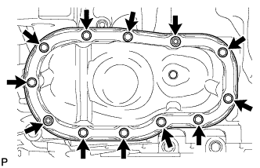 |
Выверните 10 болтов и отверните 2 гайки.
| 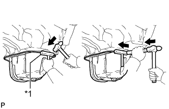 |
Вставьте лезвие инструмента для обрезки прокладки поддона картера между масляными поддонами. Срежьте нанесенный герметик и снимите масляный поддон № 2 в сборе.
| *1 | Инструмент для обрезки прокладки масляного поддона |
| 20. СНИМИТЕ МАСЛОПРИЕМНИК С СЕТЧАТЫМ ФИЛЬТРОМ В СБОРЕ |
| 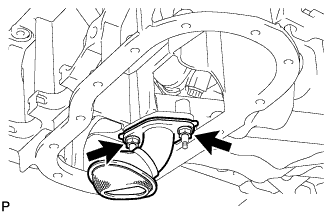 |
Отверните 2 гайки и снимите маслоприемник с сетчатым фильтром и прокладку.
| 21. СНИМИТЕ МАСЛЯНЫЙ ПОДДОН В СБОРЕ |
| 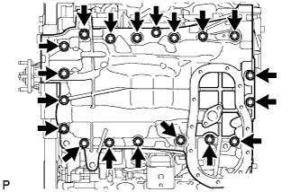 |
Выверните 17 болтов и отверните 2 гайки.
| 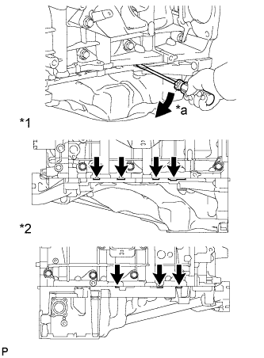 |
С помощью отвертки отделите масляный поддон, используя ее в качестве рычага в определенных местах между блоком цилиндров и масляным поддоном, как показано на рисунке.
| *1 | Левая сторона |
| *2 | Правая сторона |
| *a | Подденьте |
| 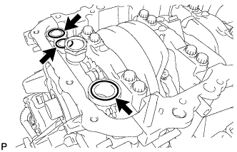 |
Снимите 3 кольцевых уплотнения с крышки цепного привода газораспределительного механизма.
| 22. СНИМИТЕ КРЫШКУ ЦЕПНОГО ПРИВОДА ГАЗОРАСПРЕДЕЛИТЕЛЬНОГО МЕХАНИЗМА В СБОРЕ |
| 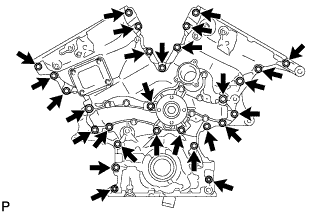 |
Выверните 26 болтов и отверните 2 гайки.
| 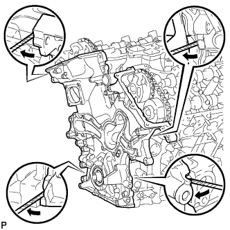 |
Снимите крышку цепного привода газораспределительного механизма, вставив отвертку между крышкой цепного привода и головкой блока цилиндров или блоком цилиндров.
| 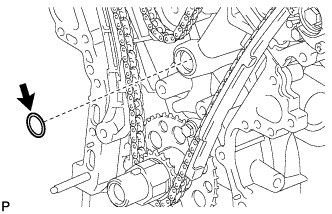 |
Снимите прокладку масляного насоса с головки блока цилиндров.
| 23. СНИМИТЕ ПЕРЕДНИЙ САЛЬНИК КОЛЕНЧАТОГО ВАЛА |
Извлеките сальник с помощью отвертки и деревянного бруска.